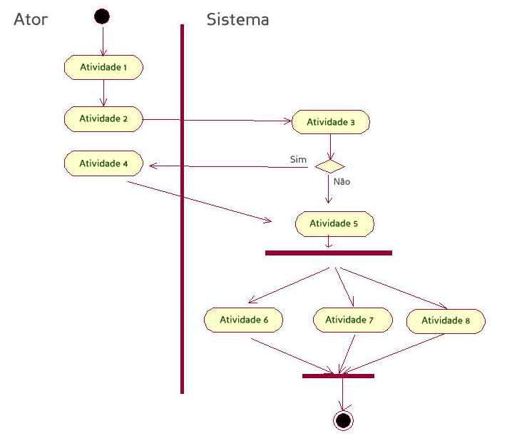

Diagramas Comportamentais
Diagramas de Caso de Uso
É um diagrama utilizado para auxiliar a comunicação entre o os analistas de sistema e o cliente, onde será demonstrada as funcionalidades do sistema de uma maneira simples e direta.

Diagramas de Estado
Esse diagrama demonstra os diferentes estados de um objeto durante seu ciclo, e os eventos (estímulos) que fazem com que o objeto altere seu estado.
O diagrama de estado é aconselhável para sistemas mais complexos, deve ser desenvolvido para objetos que possuam seus estados definidos e onde o comportamento desse objeto possa mudar a partir de um outro estado. Os diagramas de estado começam com um estado inicial e podem ter várias saídas ou fins.
Diagramas de Atividade
O objetivo do diagrama de atividades é demonstrar a seqüência de atividades de um processo através de comportamento paralelo e condicional. O diagrama de atividade assim como o de estado também possuem um estado inicial podendo ter mais de uma saída.
